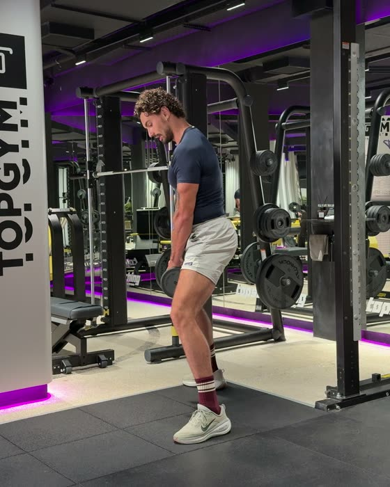
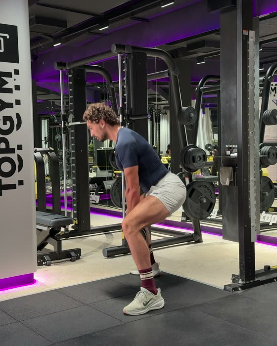
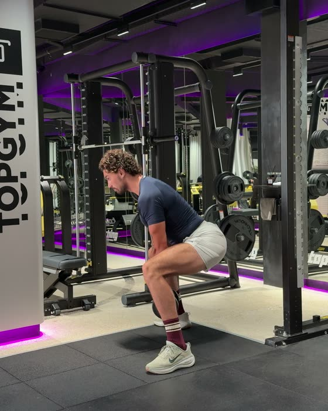

Низ A · упражнение 1 из 6Тестовая страница
Плие-присед с гантелью
Ягодицы и внутренняя поверхность бедра
4 × 12–15Отдых 1:30Гантель 10–14 кгВыдох, когда встаёшь
Три положения

СтартНоги шире плеч, носки 45°

СерединаТаз назад, корпус чуть вперёд

НизДо параллели, не ниже
Как делать
- Ноги шире плеч, носки развёрнуты на 45°, колени смотрят туда же, куда носки.
- Начни с того, что отводишь таз назад и сгибаешь колени. Корпус чуть вперёд.
- Опустись до параллели и встань с выдохом, не выпрямляя ноги до конца.
Главное
- Весь подход на полусогнутых ногах, наверху не выпрямляйся полностью.
- Ниже параллели не уходи.
- Таз немного подкручен, поясница без сильного прогиба.
- Шея продолжает позвоночник, голову не запрокидывай.
- Разворачивай носки ровно настолько, насколько колени могут идти за ними.
Частые ошибки
Колени заваливаются внутрьКолени всё время смотрят по носкам.
Прогиб в поясницеПодкрути таз немного вперёд.
Запрокидываешь головуВзгляд вперёд, шея продолжает спину.
Носки развёрнуты сильнее, чем идут колениКолено крутится. Уменьши разворот стоп.
Что должна чувствовать
- Ягодицы и внутреннюю поверхность бедра.
- Горят только бёдра спереди? Отводи таз назад сильнее.
Если гантели нет или место занято
Плие с рюкзаком или бутылкой водыЕсли занимаешься дома
Техника со слов Дани из видео. Дополнения по ExRx и ACE.